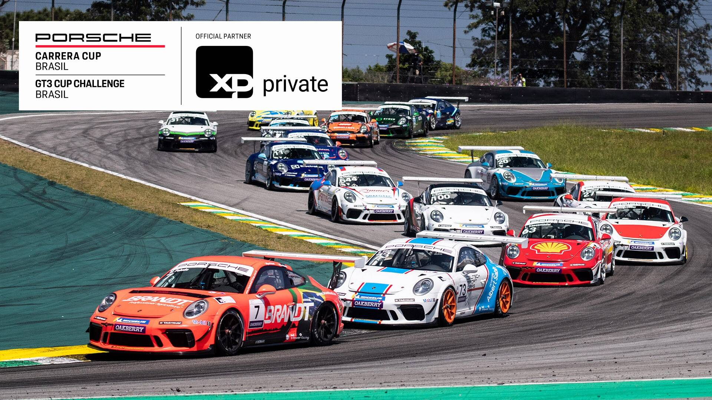
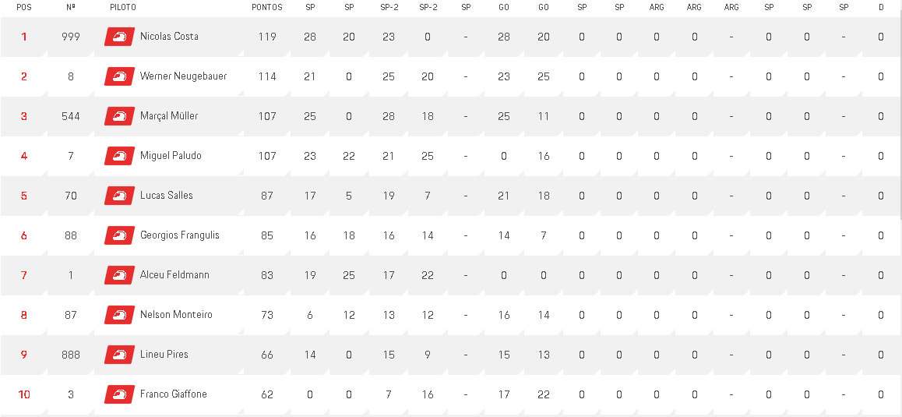

World Porsche Cup

O que é Porsche Supercup
O Porsche Supercup é uma série de corridas monomarca que apoia os eventos da Fórmula 1. Ele utiliza carros Porsche 911 GT3 Cup e é disputado em nível internacional. A temporada do Supercup geralmente consiste em várias corridas realizadas em circuitos renomados ao redor do mundo. Os pilotos competem por equipes independentes, mas os carros são fornecidos pela Porsche.
A Porsche também é conhecida por seu envolvimento no automobilismo de resistência. A empresa competiu no Campeonato Mundial de Endurance da FIA (FIA World Endurance Championship, WEC) em diferentes classes. No passado, eles participaram da categoria LMP1 com o protótipo Porsche 919 Hybrid, conquistando vários títulos.
No entanto, é importante ressaltar que novos eventos podem ter sido criados desde a minha última atualização. Para obter as informações mais atualizadas sobre qualquer evento específico relacionado à Porsche, sugiro verificar os canais oficiais da Porsche Motorsport ou visitar o site oficial da Porsche para obter as últimas notícias e atualizações.

Colocações das ultimas Corridas
